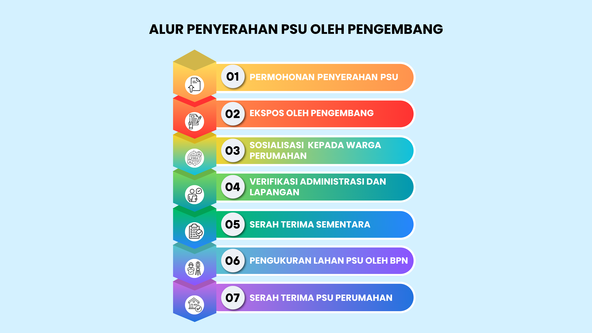
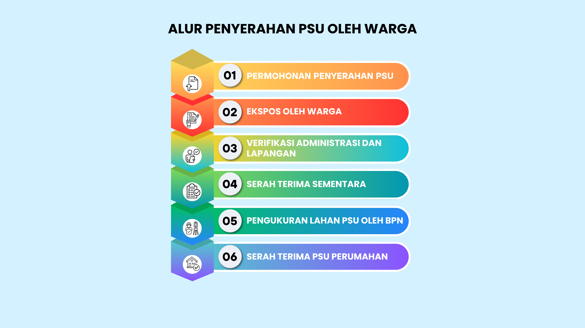

SELAMAT DATANG DI SIPERKIM KOTA YOGYAKARTA
Jelajahi informasi lengkap tentang perumahan dan permukiman yang telah diserahkan ke Pemerintah Kota
Yogyakarta!
- Fotokopi KTP Permohonan
- Fotokopi Akta Pendirian Perusahaan
- Fotokopi Sertifikat Tanah/Dokumen Kepemilikan Tanah Lainnya/Sertifikat Persil
Terdekat
- Denah Lokasi Perumahan
- Siteplan/Rekomendasi Sejenis
- PBG atau Perizinan Sejenis
- Salinan SLF
- Surat Pelepasan Hak atas Tanah
- Daftar Aset
- Surat Permohonan
- Daftar dan Spesifikasi Aset
- Denah Lokasi Perumahan
- Berita Acara Kesepakatan Penyerahan PSU oleh Warga
- Surat Kuasa Penunjukan Perwakilan Warga untuk Proses Administrasi Serah Terima
PSU
- Siteplan
- Sertifikat Persil Terdekat
| Nama Perumahan |
Lokasi |
Status |

